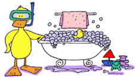
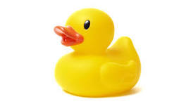
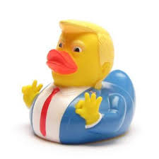

LES CANARDS DE BAINS C'EST SUPER BIEN !!!
Il n'y a vraiment rien a dire sur les canards de bain. Que voudrait vous que j'ajoute de plus ?
- Qu'il son super mignon, avec leur beau yeux bleu et leur corps jaune 
- Qu'il son super gracieux, lorsque ils flottent sur le bleu de l'eau au repos
- Que les canards de bain sont absolument adorables et apportent une touche de gaieté et de fantaisie à chaque bain.
- Que leur sourire constant et leurs couleurs vives peuvent illuminer n’importe quelle journée, transformant un moment ordinaire en une expérience joyeuse et amusante.
- Ces petits compagnons aquatiques sont bien plus que de simples jouets ; Ils sont de vrais trésor ,nous rappelant des souvenirs heureux de rires et de jeux
- Les canards de bain sont également très appréciés pour leur capacité à apaiser et à détendre.
- Leur présence dans la baignoire peut aider à créer une atmosphère de sérénité et de relaxation, idéale pour se déstresser après une longue journée.
- Que ce soit pour les enfants qui s’amusent à les faire flotter et à inventer des histoires, ou pour les adultes qui trouvent en eux une source de réconfort nostalgique,
- les canards de bain ont une place spéciale dans le cœur de beaucoup.
- De plus, ils peuvent être collectionnés car on peux les trouver en plusieurs variétés de styles et de thèmes.
- Cela peux aller des canards classiques jaunes aux versions plus fantaisistes habillées en super-héros, en pirates ou même en personnages célèbres.
- Cette diversité entre les différent canards fait que tous le monde peux trouver un canrd qu'il va adorer et le représenter
- Enfin les canards de bain sont des petits trésors qui apportent joie, détente et un brin de magie à notre quotidien.
- Ils sont les compagnons parfaits pour transformer un simple bain en un moment de pur bonheur.

